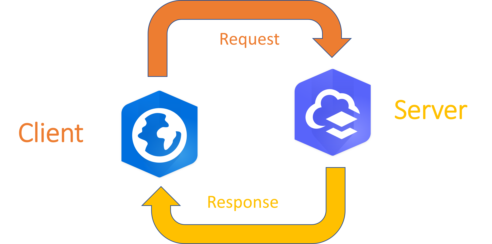

OK, but like, what's a web service really?
Introduction
Traditionally, GIS resources have been accessed directly. You would pull data into an application running on a local machine and use that machine to perform work on those data. This strategy has the benefit of making good use of powerful desktop or workstation computers, but it has the drawback of making it more difficult to share resources. Sharing direct-access resources often means making multiple copies of data, which are hard to keep in sync. Even with an effective data management strategy, the complexity of the software required means that only a few people in any given organization have the skills to make use of the resources.
The difficulty of sharing GIS resources is a barrier to good decision making because it limits who will be able to benefit from the insights of geospatial data. One strategy for overcoming this barrier is to make GIS resources available as web services. Instead of accessing data directly, a web service makes data available over the network. Instead of analyzing data on a local machine, a web service enables analysis to run on a remote server. Instead of using a single complex GIS application, web services enable the creation of multiple web apps tailored to individual workflows.
There are several different technologies for turning GIS resources into web services. This workshop will address how those services are created in Esri’s ArcGIS system. The focus will be on clarifying ambiguity in the terms used throughout the ArcGIS system and differentiating between separate components that are often incorrectly referred to interchangeably.
Client vs. Server
A client is an application that sends a request for a resource to some other application and receives that resource in response. That other application is called a server. Sometimes people use the words “client” and “server” to refer to the machines on which these applications run, but it is more accurate to say that clients and servers are software, not hardware. It might even be the case that a single application sometimes acts as a client by sending requests and sometimes acts as a server by responding to requests.
In the ArcGIS system, clients are typically a web browser, ArcGIS Pro, or a mobile app. When you type a URL into the browser or drag a portal content item into a map, you are using the client to make a request on that resource. ArcGIS Online and ArcGIS Enterprise are typically the servers. They will receive a request from the client and provide the resource.

Exercise: Make a request for a resource (5 minutes)
- In your web browser, navigate to https://gisdata.mn.gov/dataset/us-mn-state-metc-env-mces-rain-gauge-sites
- Download the shapefile version of this data set
- Answer these questions
- What was the resource that was requested when you clicked Download?
- Which application was the client that sent the request?
- Which application was the server that sent the resource?
Summary
| Client | Server | |
|---|---|---|
| Sends | Requests | Responses |
| Receives | Responses | Requests |
Portal vs Server
In the ArcGIS context, there are several different components that include the words “portal” or “server” in their name, which makes it hard to know exactly what these terms might mean. They could be referencing software components you install, the capabilities provided by that software, or the applications users interact with to access those capabilities.
Software you install
Portal for ArcGIS and ArcGIS Server are software components you install on infrastructure you control. Generally you would do this as part of an ArcGIS Enterprise deployment. These are also the names of the processes that run on the infrastructure after you install these components. Sometimes when people use the words "portal" and "server", they are referring those these software components. Because ArcGIS Online is Software-as-a-Service (SaaS), you do not install or configure any software, so there is not equivalent in ArcGIS Online to Portal for ArcGIS or ArcGIS Server.
Capabilities provided by software
If you install and configure Portal for ArcGIS, you will get an ArcGIS Enterprise organization. You can get an ArcGIS Online organization if you subscribe to ArcGIS Online. Either way, this organization's members are named users who have credentials to log into the system. Organization administrators control the user type and role of each member. The organization has sharing options to control which members have access to which content. It also has tags and categories to organize items and make them easier to search and discover. Sometimes when people say "portal" they mean these content and user management capabilities.
When you install and configure ArcGIS Server, you get an ArcGIS Server site. This server site turns GIS resources like feature classes and geoprocessing tools into services that can be accessed through a URL. There are different ArcGIS Server licensing roles, that allow you to configure different ArcGIS Server sites for different purposes (e.g. Image Server, GeoEvent Server, etc). ArcGIS Online doesn't have server licensing roles, but it is likewise able to turn GIS resources into services accessed through a URL. Sometimes when people say "server" they mean this ability to publish a resource so that it is accessible from a URL.
Web applications accessed by users
ArcGIS Enterprise and ArcGIS Online both have a web application called the Home app. This is a web page you can go to that allows you to access the capabilities of your ArcGIS Enterprise or ArcGIS Online organization. You click on buttons in this app to perform content and user management tasks. Importantly, the Home app is not the same as the ArcGIS Enterprise or ArcGIS Online organization. It is a user interface for accessing the capabilities provided by those systems. These capabilities are also accessible programatically by the Sharing API and would be available even if the Home app did not exist. But sometimes when people say "portal" they mean this Home app interface.
An ArcGIS Server site also has a web application that allows you to interact with the capabilities of the site. This is called the Server Manager app. Similar to the Home app, the Server Manager app is a user interface. The capabilities of the site are also accessible programatically from the Server Administration API. Sometimes when people say "server" they mean the Server Manager app.
Questions
- If somebody says “That item isn’t shared to any groups in the portal”, what do they likely mean by “portal”?
- If somebody says “I installed Server” what do they likely mean by “Server”?
- If somebody says “Go into the portal, click organization, then click members” what do they likely mean by “portal”?
Summary
| “Portal” | “Server” | |
|---|---|---|
| Unambiguous meaning | ❌ | ❌ |
| Associated software | Portal for ArcGIS | ArcGIS Server |
| ArcGIS Enterprise configuration | Enterprise portal | Depends on licensing role |
| ArcGIS Online configuration | ArcGIS Online portal | Controlled by Esri |
| User management | ✔️ | Limited |
| Content management | ✔️ | Limited |
| Enables publication of web services | ❌ | ✔️ |
| Interactive access via | Home app | Server Manager app* |
| Programmatic access via | Sharing API Server | Administration API* |
* Not available for ArcGIS Online
Service vs. Layer item
Sometimes people will use the words "service" and "layer" interchangeably. But they are not the same.
Service
A service defines a set of capabilities. What will you be allowed to do with a resource? Will you be able to edit data? Can you upload local data for analysis? Are you allowed to export the data? Any questions about capabilities are answered by the service configuration. In ArcGIS Enterprise, you publish services to an ArcGIS Server site you control. In ArcGIS Online, you publish services to Esri’s servers.
A service makes these capabilities available via a URL that let you use web protocols to access the resource. These URLs are referred to as REST endpoints. Some services also make resources available through a different standard called SOAP, but this is rarely used. In this workshop, you will work only with REST endpoints.
Layer item
A layer item references a particular service, but it does not change that service’s capabilities. You can use a layer item to represent the resource with different symbology, popups, or filters than the service’s default representation. Layer items (unlike services) are items in your organization. That menas you can also use a layer item to integrate its associated service into the organization's content management capabilities. In both ArcGIS Online and ArcGIS Enterprise, the typical publishing process involves adding a new layer item to the portal, which automatically creates the associated service for that layer item.
Because a layer item is not a service, it does not have its own REST endpoint. Instead, it has a unique Item ID and it references the REST endpoint of the underlying service. One important implication of the fact that a layer item sits on top of a service is that there might be multiple layer items that all reference the same service. A second implication is that you can create layer items for any service whose REST endpoint you can access, even if that service exists outside your organization.
Exercise: Publish a service (10 minutes)
- Log into ArcGIS Online with the workshop credentials you have
- In the Home app, click the Content tab
- Click the New item button, then click Your device
- Navigate to the location where you downloaded the Rain Gauge Sites shapefile
- Select the .zip archive then click Open
- Select the default option to add the file and create a hosted feature layer
- Title the item RainGaugeSites_<your initials>, then click Save
- On the item details page, note the item ID in the URL (it is a 32 character hexadecimal value)
- Change the sharing options to share this item with everyone
- At the bottom of the Overview, copy the URL. This URL is the REST endpoint of the service associated with the item.
- Navigate back to the Content tab so you can see all the items owned by your username
- In an incognito browser window, navigate to the URL you copied, then click the link to the RainGaugeSites layer
- Scroll to the bottom of the page and review the supported operations
- Answer these questions:
- What is the Item ID of the first layer item you created?
- How many new content items were created?
- How many of them were layer items?
- What is the URL of the REST endpoint for the service you published?
- Why is the REST endpoint accessible without logging in?
- Among the supported operations for the layer, which editing capabilities are supported?
Summary
| Service | Layer Item | |
|---|---|---|
| Define what can be done with a resource | ✔️ | ❌ |
| REST endpoint | ✔️ | ❌ |
| Representation of data | ✔️ | ✔️ |
| Specify users who can access | ❌ | ✔️ |
| Tags/Categories | ❌ | ✔️ |
| Item ID | ❌ | ✔️ |
Layer item vs. Layer
When publishing a service, it is possible to include multiple layers into that single service. That service will have a single configuration that applies to all the layers. The service will be referenced in the portal by a layer item. A single layer item might therefore reference multiple individual layers.
Confusingly, people sometimes say “layer” when they mean “layer item”. If somebody says "layer" it can be hard to know if they mean a layer item or a layer contained within that layer item. Layers are also called sublayers to help differentiate them from the layer item they are contained within. To understand the difference, you can think of a layer item like a group layer in ArcGIS Pro. In fact, if you add a layer item to ArcGIS Pro, it will come into the map as a group layer that includes all the sublayers in that layer item.
Sublayers do not have their own Item ID, and you do not manage access to them individually. Sharing, tags, and categories are a property of the layer item, and apply equally to all the sublayers within it. You do have control over the representation of individual sublayers by separately configuring their symbology, filters, and popups.
Even though sublayers do not have an Item ID in the portal, they do have a unique Layer ID. This Layer ID allows each sublayer to reference its own unique REST endpoint, with the Layer ID at the end of the general service URL. This unique REST endpoint means that sublayers can be added individually to a map, separate from other sublayers in the same layer item. If the Layer ID for a sublayer ever changes, maps and apps that reference the sublayer’s previous URL will break. For that reason, it is extremely important to maintain Layer ID stability. This is why you must allow assignment of unique numeric IDs in an ArcGIS Pro map before publishing layers from that map.
Exercise: Investigate a layer (5 minutes)
- Open the Item Details page for the RainGaugeSites item you created earlier
- Click on the first layer in the Layers section
- Copy the URL for the REST endpoint of this layer and paste it into a private/incognito browser tab
- Answer these questions:
- How many sublayers does this layer item have?
- How does the REST endpoint URL referenced by the first sublayer compare to the REST endpoint referenced by layer item that contains the sublayer?
- What is the Layer ID of the first sublayer?
- How would you prevent people from viewing the first sublayer without logging in?
Summary
| Layer item | Layer | |
|---|---|---|
| Item ID | ✔️ | ❌ |
| Layer ID | ❌ | ✔️ |
| References a unique REST endpoint URL | ✔️ | ✔️ |
| Sometimes called a layer | ✔️ | ✔️ |
| Sometimes called a sublayer | ❌ | ✔️ |
Map service vs Feature service
There are different kinds of services. Most of these differences are based on the type of resource the service makes available. For example, geoprocessing services enable server-side analysis and print services enable creation of printable files.
Map services and feature services both provide a REST endpoint for accessing feature data. For both types of services, that endpoint can be used to query the data, access the attribute table, and as an input for analysis tools. But these two types of services provide those capabilities in different ways that are useful for different purposes.
Response differences
A map service will have a REST endpoint that ends with MapServer. When a client sends a request to this URL, the service responds by sending a rendered image of the data. A feature service, by contrast, will have a REST endpoint that ends with FeatureServer. When a client sends a request to this URL, the service responds by sending the spatial reference, vertex coordinates, and geometry type of the features. The client then renders the geometry.
An image of the data is typically a smaller file size than the geometries themselves. Compared to a feature service, a map service consumes less network bandwidth and is more easily rendered by low-powered client applications. Sending an image of the data also means map services can include both vector and raster data. The advantage of a feature service, on the other hand, is that access to the geometries enables editing of the features. Feature services can also reduce CPU usage by the server by offloading feature rendering to the client.
Content item differences
Because map and feature services are different kinds of services, they are associated with different types of layer items in the organization. A map service is referenced by a map image layer, while a feature service is referenced by feature layer.
Exercise: Add external services to the portal (10 minutes)
- Open this link (opens in new tab)
- From the Supported Operations at the bottom of the page, click Export Map
- For format, select JSON, then click Export Map Image (GET)
- Copy the URL listed in the href property and navigate to that page
- In the ArcGIS Online Home app, on the Content tab, click New item
- Click URL, paste the first URL into the URL box, then click Next
- Type RainGaugeSites1_<your initials> for the title, then click Save
- Open this link (opens in new tab)
- From the Supported Operations at the bottom of the page, Click Query
- For Layer Definitions, copy and paste this value:
[{"layerId": 0, "where": "1=1", "outFields": "SiteName"}] - For format, select JSON, then click Query (GET)
- Copy the URL for the page with this query response.
- Repeat the process for adding this URL as an content item to ArcGIS Online, titling the item RainGaugeSites2_<your initials>
- Answer these questions:
- What kind of service is the first REST endpoint?
- How can you be sure of the type of service a REST endpoint provides access for?
- Is Export Map a supported operation for the second REST endpoint?
- How did the Export Map response on the first service differ from the Query response on the second service?
- What kind of layer item was created when you added the first URL?
- What kind of layer item was created when you added the second URL?
Summary
| Map Service | Feature Service | |
|---|---|---|
| Analyzable* | ✔️ | ✔️ |
| Queryable* | ✔️ | ✔️ |
| Attribute table access* | ✔️ | ✔️ |
| Enables editing* | ❌ | ✔️ |
| Geometry rendered by | Server | Client |
| REST endpoint | MapServer | FeatureServer |
| File transfer size | Generally smaller | Generally larger |
| Associated portal item | Map image layer | Feature layer |
* If enabled as a capability of the service
Cached vs. Dynamic map service
Because a map service responds to visualization requests with an image of the features, it needs to generate that image server-side. A dynamic map service draws this image every time it receives a request. A cached map service, on the other hand, means that images are generated and saved ahead of time. Requests on a cached map service receive this saved image.
Draw time differences
Drawing the image takes time, so a dynamic map service will be slower than a cached map service to respond to requests. But creating the cached map service in the first place is generally much slower, because every image in the cache is typically created up front.
Data update differences
Because a cached map service sends a saved image for every request, it may not reflect the most recent data. The cache would need to be recreated for the image to update. Dynamic map services, however, will always show the most recent edits to the data. For that reason, cached map services are typically best if the data are rarely updated, while dynamic map services are typically best for data that are frequently updated.
Questions
- If you have a map service of parcels that are updated quarterly and is used as a basemap by many different users, should that service be cached?
- If you have a feature service that is edited annually, should that service be cached?
Summary
| Cached Map Service | Dynamic Map Service | |
|---|---|---|
| Geometry drawn | On cache creation | On every request |
| Service creation | Slower | Faster |
| Service response time | Faster | Slower |
| Reflects most recent edits | ❌ | ✔️ |
| Best for data that | Rarely change | Often change |
Hosted vs. instance-based service
For map and feature services, there are two different technologies that enable turning feature classes on disk into services accessible from a REST endpoint.
Hosted services
Feature services published to ArcGIS Online are considered “hosted”. This phrasing means more than just saying that ArcGIS Online generically serves as a host for data and services. It refers to a particular technology that makes resources available as web services. This technology provides only limited control over the service configuration and requires that the underlying data be copied to a specially optimized ArcGIS-managed data store.
You can also publish hosted services to ArcGIS Enterprise because you can create your own ArcGIS-managed data stores.
| Hosted service type | Data store |
|---|---|
| Hosted feature service | Relational or spatiotemporal big data store |
| Hosted image service | Raster store |
| Hosted 3D scene service | Tile cache (before version 11.4) or object store (11.4 and later) |
| Hosted vector tile service | Hosting server file system |
When you publish a hosted service to ArcGIS Enterprise, the data must be copied into one of these specialized data stores.
The main benefit of a hosted service is that it is very memory efficient. You can have many hosted services for a small memory footprint. Hosted services are also automatically tuned and optimized by the ArcGIS system. For that reason, there isn't much you can configure for hosted services.
Instance-based services
ArcGIS Enterprise also supports a second type of service based on the same technology that powers ArcGIS Pro. These types of services go by several different names, depending on who you ask:
- By-reference (or by-ref) service
- Non-hosted service
- ArcGIS Server service
- ArcObjects service
- ArcSOC (or SOC) service
Because the settings for these services largely depends on what Server Manager calls intances, this workshop will refer to them as instance-based services.
The most important implication of using instance-based services is that they do not need to reference data in a specially-optimized ArcGIS-managed storage location. The data might be stored in a variety of supported databases, network shares, cloud store, or local file directories. This flexibility is only available in ArcGIS Enterprise. ArcGIS Online does not support instance-based services.
One benefit of an instance-based service comes from using a data store that you have full control over. With instance-based services there is no need to copy data, and you can take advantage of the capabilities of user-managed data stores that ArcGIS-managed data stores do not have (like versioning, topology, or direct SQL access). Another advantage is that you also get substantially more control over the precise service configuration than you do with hosted services.
Questions
- An organization wants to expand the number of people who can publish services but is concerned about the using too much memory on the ArcGIS Server machine. Which type of service will minimize the memory footprint of services?
- A gas utility needs to make sure that the geometry of their features adheres to defined spatial relationships (for example, no overlaps in pipeline features). Which type of service enables topology rules?
Summary
| Hosted service | By-reference service | |
|---|---|---|
| Data | ArcGIS-managed | User-managed |
| Service configuration options | Few | Many |
| RAM usage | Much less | Much more |
| Corresponding layer item | Specifies “(hosted)” | No additional specification |
| Publish to ArcGIS Online | ✔️ | ❌ |
| Publish to ArcGIS Enterprise | ✔️ | ✔️ |
| ArcGIS-managed data | User-managed data | |
|---|---|---|
| Storage technology | Chosen by Esri | Chosen by user |
| Backups/Updates | Managed by user | Managed by user |
| Versioning/Archiving | ❌ | If supported by database |
| Topology | ❌ | If supported by database |
| Direct SQL Access | ❌ | If supported by database |
Check your own services
- Log on to your organization's ArcGIS Online or ArcGIS Enterprise portal
- For one of the layer items in the portal find the answers to the following questions:
- What type of item is it?
- What is its item ID?
- What is the REST endpoint URL of the service for this item?
- Is this service a Map Service, a Feature Service, or something else?
- If it is a Map Service running on an ArcGIS Server site, open Server Manager and determine if it's cached or dynamic.
- If it is a non-hosted Feature Layer, what user-managed data store does it reference?
- Repeat for other layer items as time (and your patience) allow
Answers
Client vs. Server
- What was the resource that was requested when you clicked Download? The .zip archive file
- Which application was the client that sent the request? My browser
- Which application was the server that sent the resource? Minnesota Geospatial Commons
“Portal” vs. “Server”
- If somebody says “That item isn’t shared to any groups in the portal”, what do they likely mean by “portal”? Content management capabilities provided by the Portal for ArcGIS software or ArcGIS Online service
- If somebody says “I installed Server” what do they likely mean by “Server”? The ArcGIS Server software
- If somebody says “Go into the portal, click organization, then click members.” what do they likely mean by “portal”? The Home app
Service vs. Layer item
- What is the Item ID of the first layer item you created? Values will vary, but it should be a 32-character alphanumeric string
- How many new content items were created? 2
- How many of them were layer items? 1
- What is the URL of the REST endpoint for the service you published? Values will vary, but it should end
/FeatureServer - Why is the REST endpoint of the service accessible without logging in? Because the sharing level on the associated layer item was set to Everyone.
- Among the supported operations for the layer, which editing capabilities are supported? None
Layer item vs. Layer
- How many layers does this sublayer item have? 1
- How does the REST endpoint URL referenced by the first sublayer compare to the REST endpoint referenced by layer item that contains the sublayer? It is similar, but with a /0 at the end indicating the Layer ID
- What is the Layer ID of the first sublayer? 0, which matches the value in the URL.
- How would you prevent people from viewing the first sublayer without logging in? Change the sharing settings on the layer item the layer is contained in. All sublayers for a layer item will have the same sharing properties.
Map service vs. Feature service
- What kind of service is the first REST endpoint? Map Service
- How can you be sure of the type of service a REST endpoint provides access for? Because the URL ends with MapServer
- Is Export Map a supported operation for the second REST endpoint?
- How did the Export Map response on the first service differ from the Query response on the second service? Export map on a Map Service returned an image. Query on a Feature Service returned feature geometry
- What kind of layer item was created when you added the first URL? Map Image Layer, which matches the fact that the URL is for a map service.
- What kind of layer item was created when you added the second URL? Feature Layer, which matches the fact that the URL is for a feature service.
Cached vs. Dynamic map service
- If you have a map service of parcels that are updated quarterly and is used as a basemap by many different users, should that service be cached? Yes. Quarterly updates to the underlying data mean infrequent cache rebuilding. Large number of users means it is a good idea to minimize the server resources used to respond to requests.
- If you have a feature service that is edited annually, should that service be cached? No. Service caching only applies to map services because the image of the data can be pregenerated. The feature geometry of a feature service cannot be cached in the same way. You can get a similar effect by publishing vector tile services or using query response caching for hosted feature layers, but the idea of "cached" vs "dynamic" only applies to map services.
Hosted vs. Instance-based service
- An organization wants to expand the number of people who can publish services but is concerned about the additional load on the ArcGIS Server machine. Should they train these new publishers to create hosted services or instance-based services to minimize server machine load? Hosted. Instance-based services require more memory.
- A gas utility needs to make sure that the geometry of their features adheres to defined spatial relationships (for example, no overlaps in pipeline features). Should they use an ArcGIS-managed or user-managed datastore for these features? User-managed. ArcGIS-managed datastores cannot use topology rules to validate feature geometry.
Resources
Client vs. Server
- ArcGIS Pro | 2D, 3D & 4D GIS Mapping Software
- ArcGIS Online | Cloud-Based GIS Mapping Software Solution
- ArcGIS Enterprise | Enterprise GIS System - Geospatial Platform
“Portal” vs. “Server”
- Portal for ArcGIS installation guide—ArcGIS Enterprise
- What is the ArcGIS Enterprise portal?—Portal for ArcGIS
- User types—ArcGIS Online Help
- Member roles—ArcGIS Online Help
- Share items—ArcGIS Online Help
- Use Tags Effectively
- Content categories—ArcGIS Online Help
- ArcGIS Server installation guide—ArcGIS Enterprise
- ArcGIS Server licensing roles—ArcGIS Server
- Configuring the portal website—Portal for ArcGIS
- Sharing API—ArcGIS REST APIs
- ArcGIS Server Manager—ArcGIS Server
- Server Administration API—ArcGIS REST APIs
Service vs. Layer item
- Services in ArcGIS Enterprise—ArcGIS Server
- REST endpoint URLs—ArcGIS REST APIs
- Items in ArcGIS Online—ArcGIS Online Help
- Give the REST a Rest
- item ID
Layer item vs. Layer
Map services vs. Feature services
- Geoprocessing services—ArcGIS Server
- Printing in web applications—ArcGIS Server
- Map service—ArcGIS Server
- Feature services—ArcGIS Server
- Map image layers—Portal for ArcGIS
- Feature layers—Portal for ArcGIS